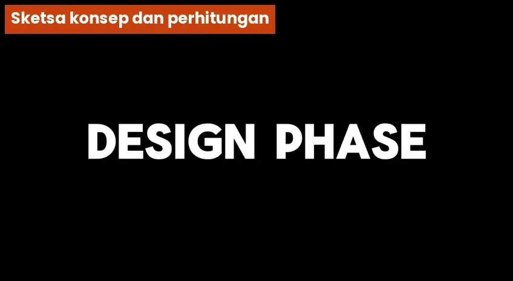
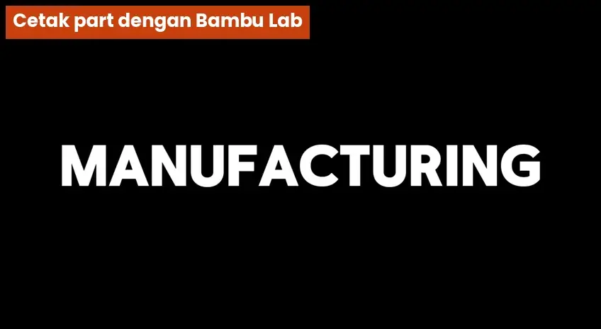
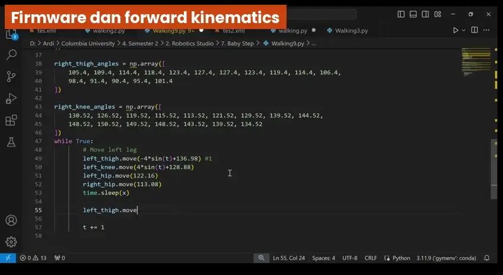
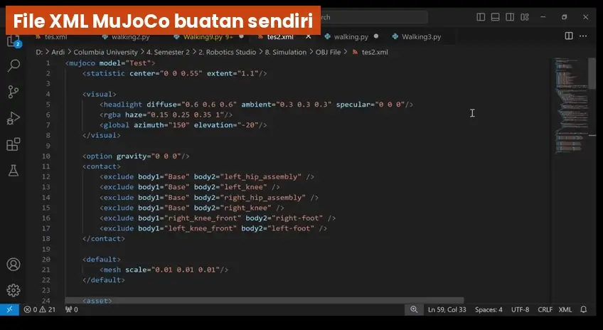
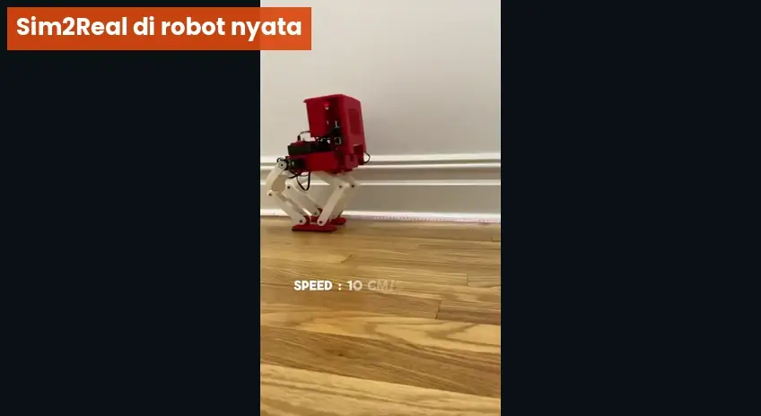

1.A Planning Phase
Dari ide di atas kertas sampai model 3D yang siap difabrikasi.

Sketsa kasar (Concept)
Eksplorasi bentuk kaki, posisi sendi, dan penempatan aktuator sebelum angka-angka dikunci.
Engineering analysis
Perhitungan untuk menentukan spesifikasi sebelum membeli komponen.
Desain 3D di Fusion 360
Seluruh robot dimodelkan dalam Autodesk Fusion 360 sebagai dasar BOM, fabrikasi, dan simulasi.
Coba: kinematika kaki dan kebutuhan torsi
Geser parameter untuk melihat sudut sendi (inverse kinematics dua link) dan perkiraan torsi statis saat satu kaki menopang seluruh massa. Nilai awal hanya ilustrasi.
1.B Procurement & Building Phase
Dari daftar komponen sampai robot yang terbukti bisa berjalan. Klik tiap tahap.


Bill of Material dengan tautan McMaster-Carr
Centang item yang sudah dibeli. Setiap baris membuka halaman McMaster-Carr.
| Beli | Item | Spesifikasi | Qty | Kategori | McMaster |
|---|
Item di tabel ini contoh. Ganti dengan BOM proyek di array BOM pada kode, dan isi nomor part agar tautan langsung menuju part yang tepat.
Kriteria keberhasilan: tercapai
- Robot bipedal berjalan tanpa terjatuh
- Kecepatan jalan mencapai 6 cm/s
1.C Simulasi MuJoCo untuk Improved Locomotion
Robot dibuat ulang dalam simulasi, lalu dilatih agar berjalan jauh lebih cepat dari versi fisik awal.

File XML MuJoCo buatan sendiri
Struktur ilustrasi. Nilai sebenarnya mengikuti model robot di Fusion 360.
Training reinforcement learning (Q-learning)
- Observasi keadaan robot
- Policy memilih aksi sendi
- MuJoCo mensimulasikan satu langkah
- Reward dihitung
- Policy diperbarui
Hasil kecepatan
Kecepatan naik dari 6 cm/s menjadi 10 cm/s, sekitar 1,7 kali lebih cepat.
1.D Sim2Real
Policy hasil simulasi dipindahkan ke robot fisik.

| Lingkungan | Kecepatan | Status |
|---|---|---|
| Simulasi MuJoCo | 10 cm/s | Target |
| Robot fisik | 10 cm/s | Sesuai simulasi |